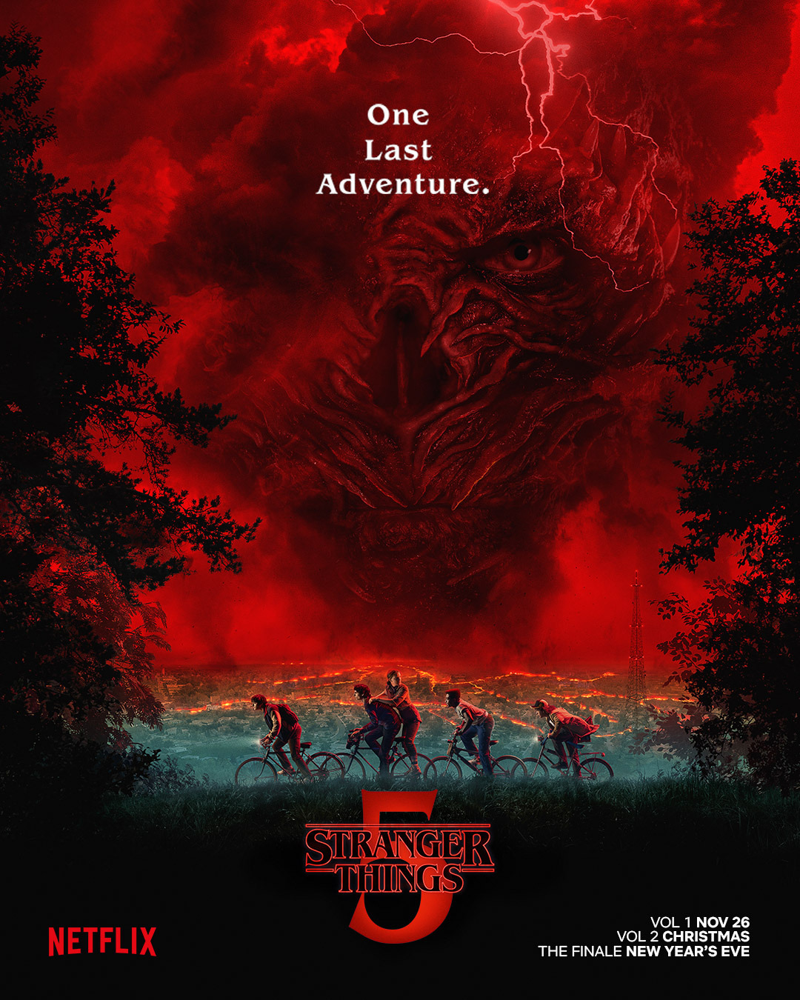

Megjelenés: 2026. március
A galaxis messzi-messzi részén új kaland kezdődik. A Mandalorian visszatér, hogy új küldetéseket teljesítsen, miközben Grogu, a kis zöld lény, ismét a középpontban van. A film érzelmi mélységei mellett a látványvilág is lenyűgöző: idegen bolygók, futurisztikus járművek és látványos akciójelenetek várják a nézőket. A barátság, hűség és a család fogalma új értelmet nyer, miközben a rajongók új bolygókat, idegen fajokat fedezhetnek fel. A rendezés mesteri: az akció, a humor és az érzelem tökéletesen egyensúlyban van. Mando és Grogu kapcsolata még szorosabbá válik, és új karakterek is feltűnnek, akik új színt visznek a történetbe. A film zenéje és díszletei tökéletesen illeszkednek a Star Wars univerzumhoz, így a néző teljesen elmerülhet a galaxis világában. A pörgős akciójelenetek és az érzelmes pillanatok tökéletes kombinációja garantálja, hogy a rajongók elégedetten hagyják el a termet.

Megjelenés: 2026. április
Ez a romantikus vígjáték Toszkána napfényes tájain kalauzolja a nézőket. A történet középpontjában két főhős áll, akik egy váratlan utazás során találkoznak, miközben újratalálják önmagukat. A film a szerelem, barátság és élet apró örömeinek ünnepléséről szól, tele humorral, romantikus pillanatokkal és szívmelengető jelenetekkel. A látvány mesés: napfényes szőlőültetvények, olajfaligetek és bájos olasz kisvárosok képei egészítik ki a történetet. A zenék és a hangulat tökéletesen megalapozzák a film érzelmi tónusát. A karakterek fejlődése központi elem: kezdetben bizonytalanok, de a kaland során bátrabbak, magabiztosabbak lesznek, és felfedezik, hogy az élet tele van lehetőségekkel. A forgatókönyv frappáns párbeszédekkel és humorral teli, így a film egyszerre szórakoztató és megható. Az üzenet egyszerű, de mély: soha nem késő újrakezdeni, és mindig van lehetőség a boldogságra, ha merünk lépni és nyitottak maradunk a világra. Ideális választás egy nyári esti kikapcsolódáshoz.

Megjelenés: 2026. május
A Solo Mio a romantika és dráma kedvelőinek érkezik, tele érzelmes fordulatokkal és életigenléssel. A főhős múltja árnyékában próbál új életet kezdeni, miközben lehetősége nyílik a szerelemre és önmaga megtalálására. A történet a szeretet, a remény és az újrakezdés témáit dolgozza fel, miközben a karakterek mélyen emberiek és hitelesek. A film képi világa lenyűgöző: romantikus városképek, naplementék, kellemes zenei aláfestés segíti a nézőt, hogy teljesen belemerüljön a történetbe. A drámai pillanatok és a humoros jelenetek egyensúlyban vannak, így a film egyszerre szórakoztató és megható. A nézők átélhetik a főhős belső konfliktusait, és végig szoríthatnak a boldog befejezésért. A Solo Mio tökéletes választás a romantikus történetek kedvelőinek.

Megjelenés: 2026. június
Peter Parker visszatér, hogy megvédje New Yorkot a gonoszok új terveitől. A film a barátság, bátorság és felelősség témáit helyezi előtérbe, miközben Pókember izgalmas kihívásokkal találkozik. Az akciódús jelenetek és a látványos vizuális effektek garantálják a pörgős szórakozást. A karakterek fejlődése fontos elem: Peter Parker most is felelősségteljes, de új kihívások és váratlan események próbára teszik. A humor és a dráma remekül kiegyensúlyozott, így a film minden korosztálynak élvezetes. A város, a látványvilág és a zene mind hozzájárul a teljes élményhez. A Spider-Man: Brand New Day izgalmas, szórakoztató és érzelmes kaland egyben.

Megjelenés: 2026. szeptember
Hawkins városában folytatódnak a rejtélyek és borzalmak. A szereplők felnőnek, a veszélyek pedig egyre komolyabbak. A titokzatos alternatív világ, a barátság ereje és az izgalmas fordulatok minden epizódban érezhetők. A 80-as évek hangulatát idéző díszletek és zenék teszik felejthetetlenné ezt a sötét, izgalmas, ugyanakkor érzelmes sorozatot. Az ötödik évad során új karakterek tűnnek fel, és a történet fonala még összetettebbé válik. A félelem és kíváncsiság folyamatosan váltakozik, miközben a szereplők személyes életének és barátságának drámája is kibontakozik. A Stranger Things 5. évad egy izgalmas, érzelmes és minden eddiginél sötétebb kaland, amely a rajongókat teljesen leköti.
Készítette: Horváth Eliza, Töröcsik Dániel, Lányi Bence, Nagy Zsombor, Németh Barnabás. Rovat témája: Filmek és sorozatok, rovatvezető: Töröcsik Dániel
Koncepció: Ez a dokumentum a 2026-os filmújdonságokat mutatja be.Minden filmről részletesen írtunk, hogy kiderüljön, miről szól, milyen a hangulata, kik a szereplők, és milyen élményt adhat a nézőnek.
A munkát ötfős csapatként csináltuk, mindenkinek jutott feladat: volt, aki filmeket választott (Dani, Barnus, Zsombi), valaki írta a szöveget (mind az öten irtunk), és volt aki az anyag összeállításával foglalkozott (Liza, Bence). Így állt össze ez a kétoldalas, teljesen kész anyag, ami remélhetőleg szórakoztató és átlátható.